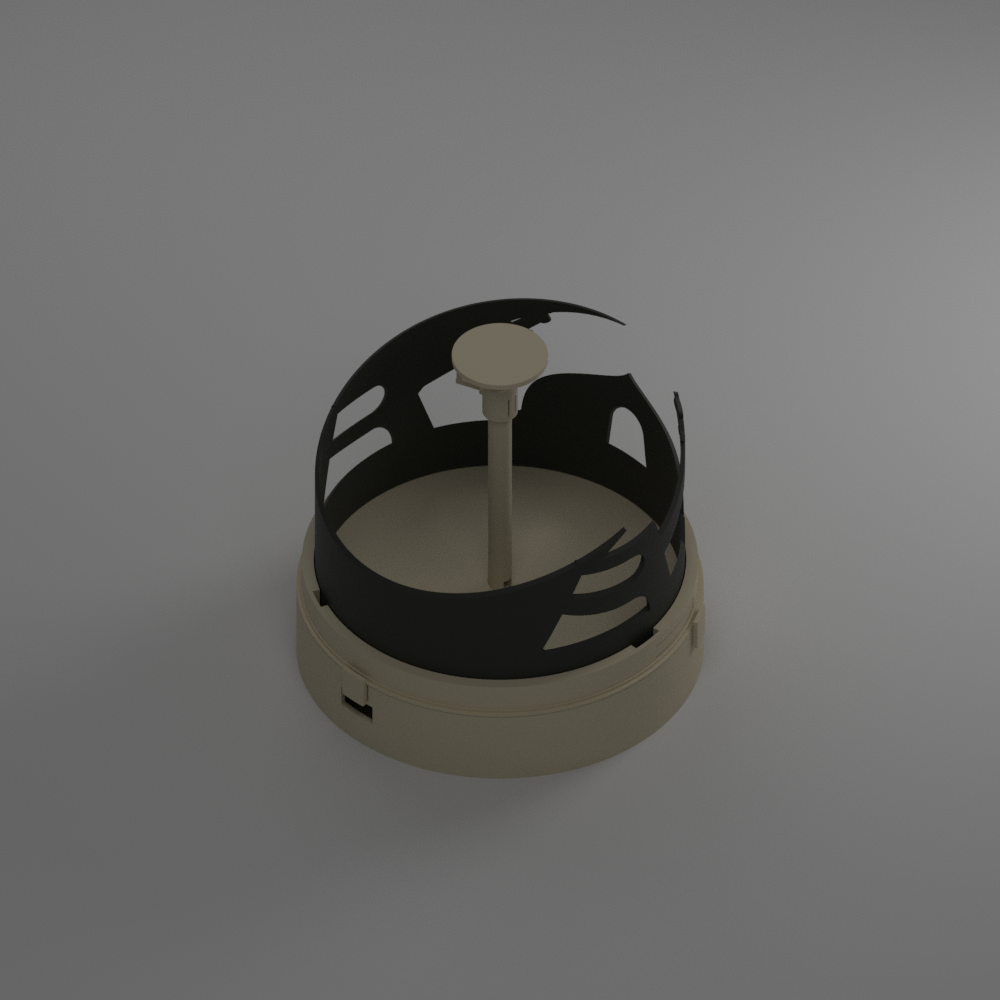
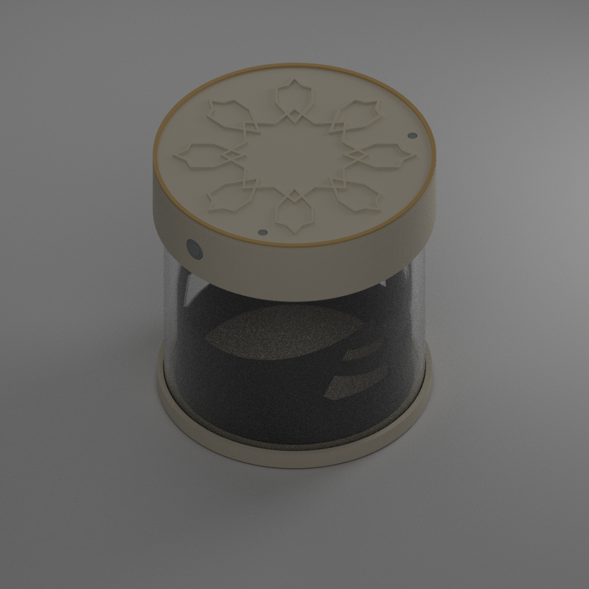

ТЕКУЩАЯ КОНСТРУКЦИЯ · ПЕЧАТНЫЕ ОПОРЫ
Hilal без трубы
Четыре печатные детали, сменный картридж на байонете и съёмный колпачок с защёлкой. Около 78 г PETG без учёта поддержек. Перемычка колпачка добавляет небольшую тень.
Те же пять рисунков для лампы с PMMA-трубой →
Пять новых тематических вставок — выбрать рисунок →
Откройте конструкцию, покрутите 3D-модель и посмотрите её расчётную тень. У каждого варианта свой комплект деталей и результаты проверки.

Четыре печатные детали, сменный картридж на байонете и съёмный колпачок с защёлкой. Около 78 г PETG без учёта поддержек. Перемычка колпачка добавляет небольшую тень.

Прежняя конструкция с покупной PMMA-трубой, круглым медальоном и батарейным модулем. Требует прозрачной детали и клеевого соединения; сохранена для сравнения.
Загрузите изображение и настройте силуэт в предыдущем генераторе. Его геометрия отличается от текущего Hilal: это отдельный режим, а не готовый сменный картридж для новой лампы.
Открыть генераторВсе варианты — цифровые прототипы. Расчёт тени не заменяет проверку с выбранным LED и пробную печать. Батарейки в комплект не входят. Внутри каждой модели есть переключатель вариантов.